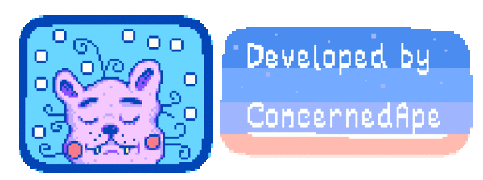
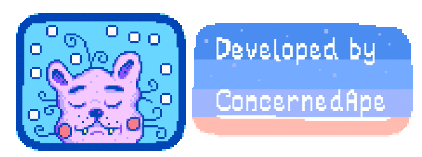
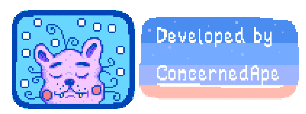
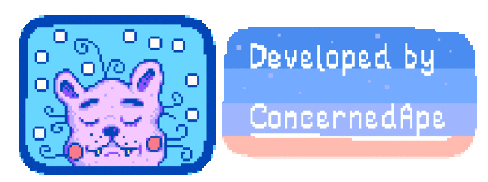

Centro da Comunidade

A sala de artesanato:
Ela terá os primeiros de conjuntos desbloqueados, Ao completar todos
os conjuntos desta área, a ponte ao lado da Mina será consertada, dando acesso a Pedreira.
Cada conjunto pedirá coletaveis encontrados no mapa em todas as quatro estações,
além de alguns materiais e itens encontrados na caverna.

O conjunto Copa:
Você desbloqueia os conjuntos copa após liberar seu primeiro conjunto de sala de artesanato.
Após completar tudo, você desbloqueará a Estufa no
qual poderá plantar qualquer lavoura independentemente da estação que está. Os conjuntos necessitarão de :
Plantações de todas as estações, produtos animais, frutas e geleias.

Conjunto dos Peixes:
Ao completar todos os conjuntos do Aquário, a pedra brilhante localizada
no lado esquerdo da entrada da Mina será removida.
Willy também lhe dará uma Peneira de cobre, que pode
ser usada para coletar minérios e outros itens de dentro da água. Para
completar os conjuntos será necessário: Peixes do mar (dia e noite),
peixes de rio,
coletáveis da praia e peixes de lago.

Sala da caldeira:
Este conjunto desbloqueia o Carrinho da Caverna, permitindo que certas áreas sejam acessadas mais rapidamente.
Serão necessários: Barras de Metais, minérios e drops de monstros.
Cofre

Cofre:
O Cofre aparece após completar quatro conjuntos. Aperte o botão de "Comprar" para comprar os conjuntos.
Ao comprar todos os conjuntos desta área por um total de 42 500 ouros,
o Ponto de Ônibus será reparado,
e acesso ao Deserto de Calico será possível.